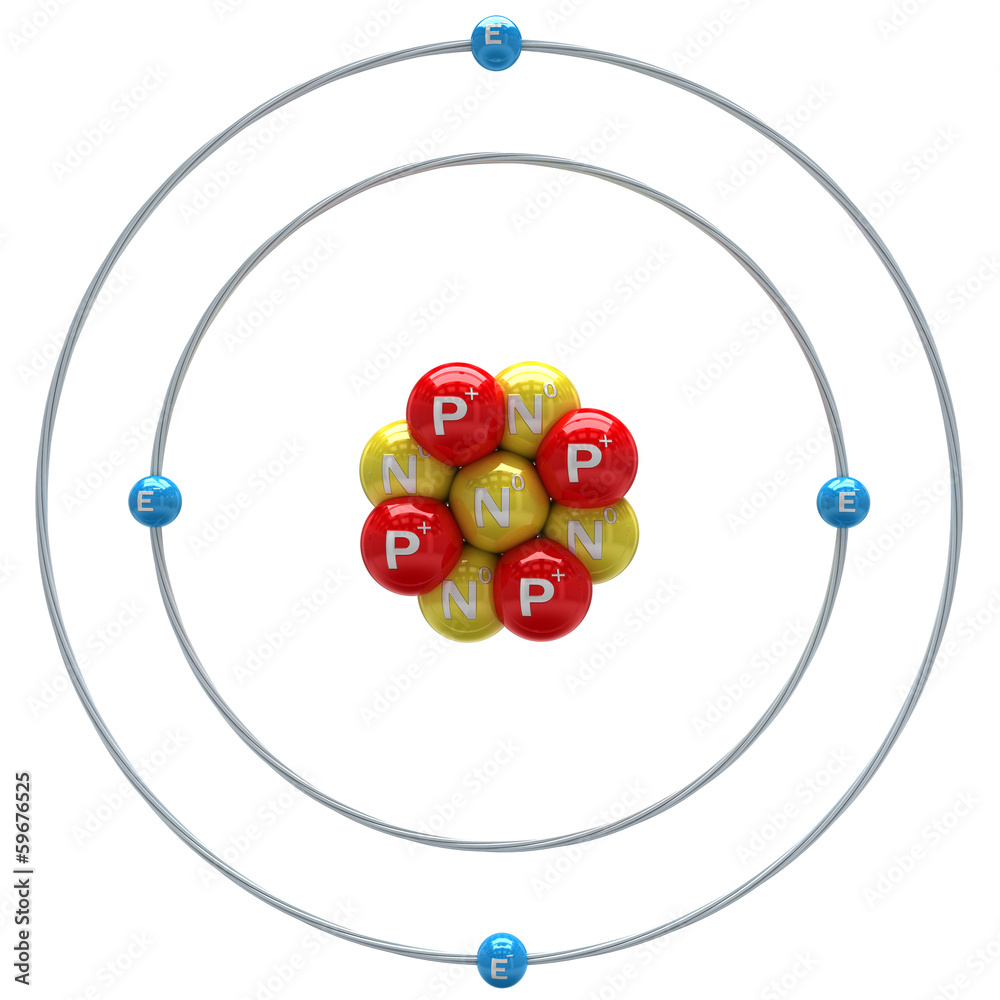

Beryllium is a chemical element with the symbol Be and atomic number 4. It is a relatively rare element, typically found in minerals such as beryl and bertrandite.
Properties of Beryllium:| Property | Value |
|---|---|
| Symbol | Be |
| Atomic Number | 4 |
| Atomic Mass | 9.0122 u |
| Melting Point | 1,287°C |
| Boiling Point | 2,471°C |
| Electronegativity | 1.57 |
Beryllium is known for its low density, high melting point, and excellent thermal conductivity. It is often used in various industries, including aerospace and electronics.